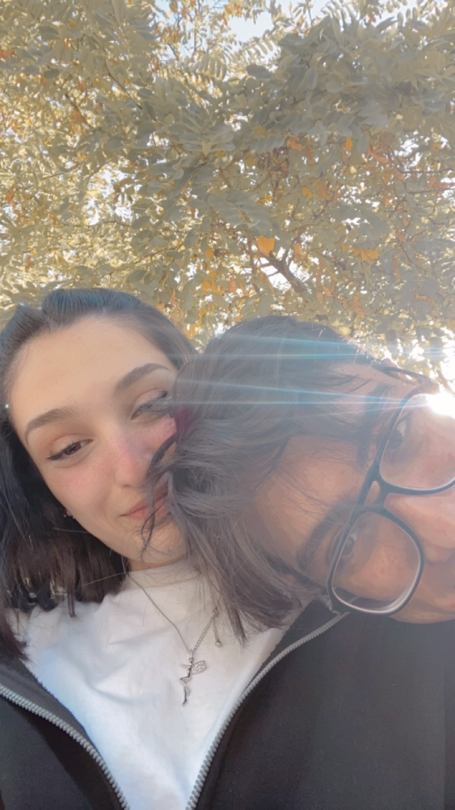
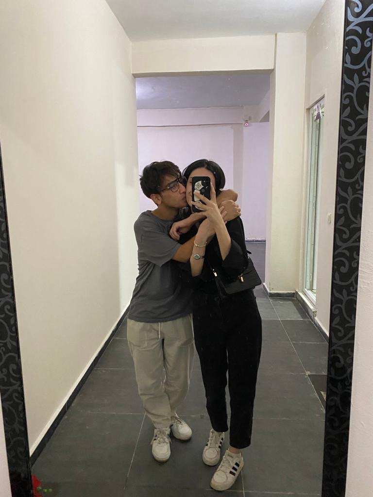
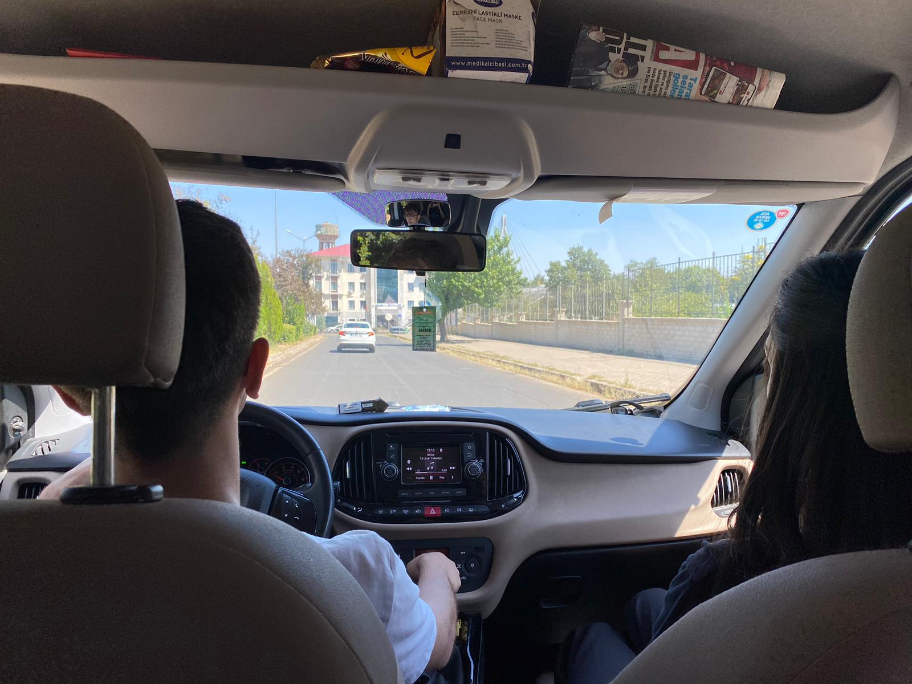
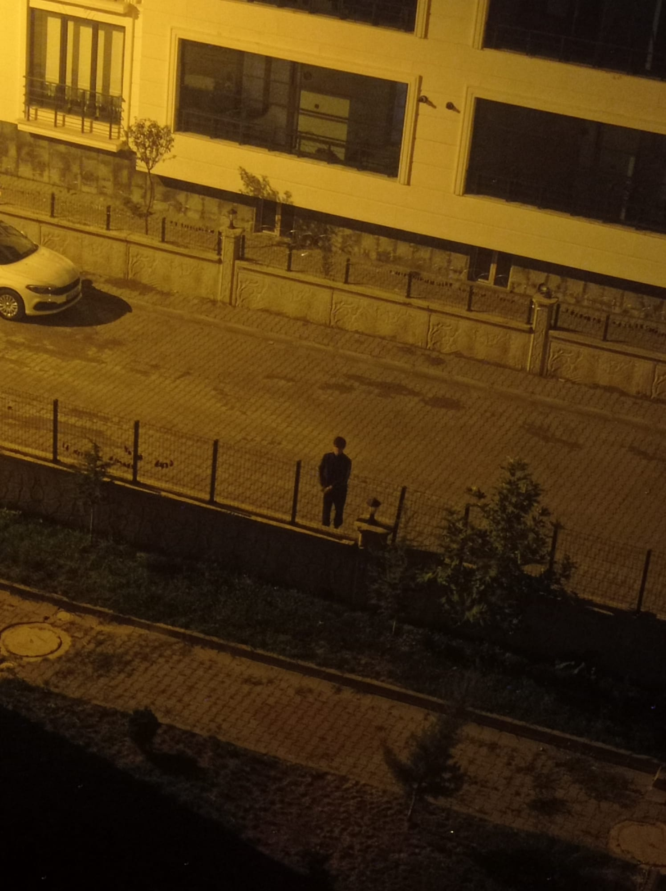
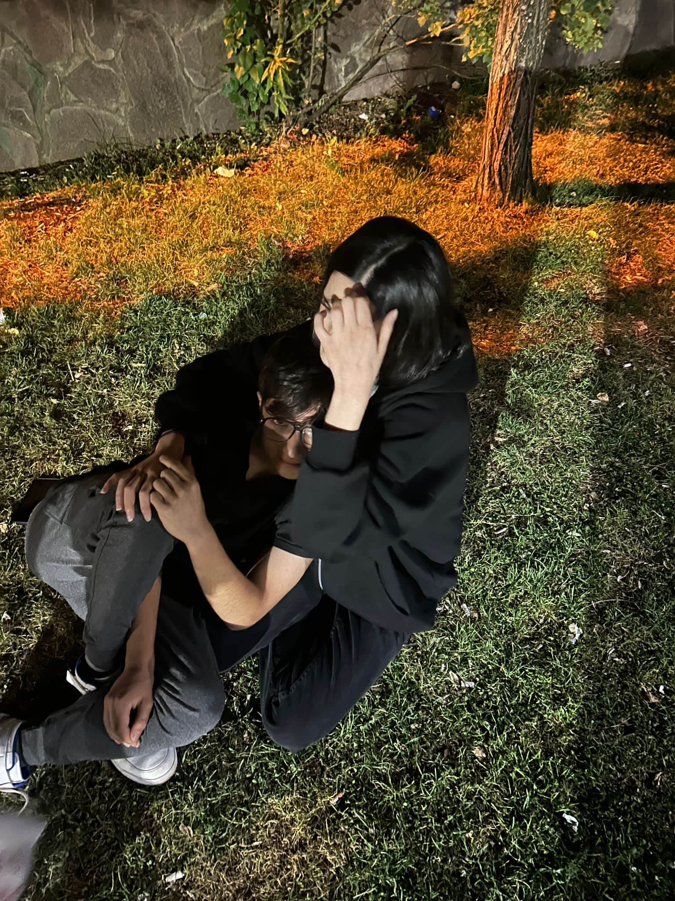
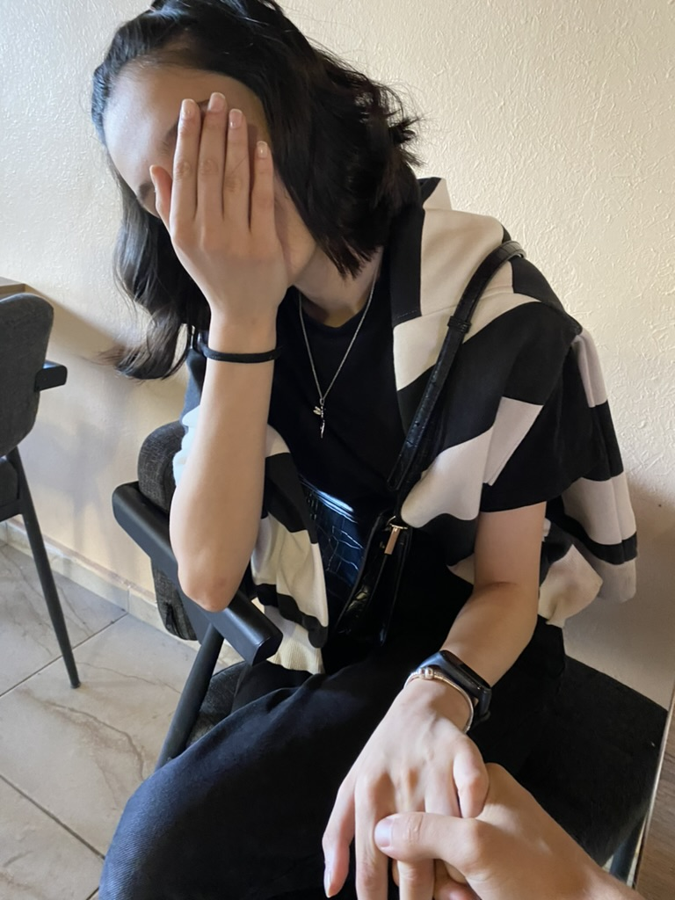

Şiir kitabıma hoş geldin sevgilim. Seni düşünerek birkaç şey karalamıştım. Bunları burada toplamak istedim. Seni çok seviyorum esogluesek.

güneş gibi parlayan bembeyaz teninin saçtığı ışık kör etmişti beni,
senden başka sevilmeye layık hiçbir canlı göremeyecek kadar.

nereden bilecektim,
kafamın içinde dünyanın gürültüsünü dindireceğini,
dudaklarından dökülen her bir sözün.
basit kalır sana hissettiklerimin yanında her cümle,
ne mecnunun leylası,
ne bir tanrı sevdası,
tertemiz yüreğinin ebedi tutsağıyım.

ben de seni tarif ederim sevgilim,
binlerce cümleyle,
ama hiçbir lisanda yok,
seni anlatmaya yetecek kadar kelime

kırıyorsun sevgili,
senden vazgeçeceğimi tahayyül ettiğin her bir saniye kırıyorsun,
bilmez misin ki bu adamı ateşler içine atsalar,
dudaklarından kan yerine adın dökülür.

biliyorum,
biliyorum dünyanın kahrını çektiğini,
geliyorum o acıların her birini dindirmeye,
solmuş kalbini aydınlatıp hayatı sevdirmeye,
kederli günlerimizi teker teker gömmeye,
aç kollarını sevgilim.

insan sever,
insan aşık olur,
osman bunlardan hiçbiri değildir,
osman gecenin içinde bir ay misali parlayan kara saçlar içinde bembeyaz tenli kadının gönüllü kurbanıdır.
Renksiz bir bahçeydi sensiz hayatım, Aydınlattın bembeyaz teninle dibine kadar. Nefes bile almıyormuşum meğer, Aldığım her nefesi, varlığın şereflendirene kadar.